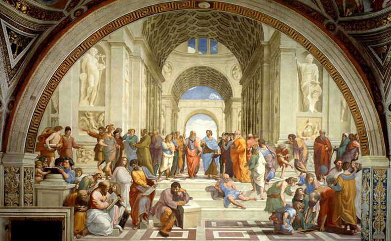
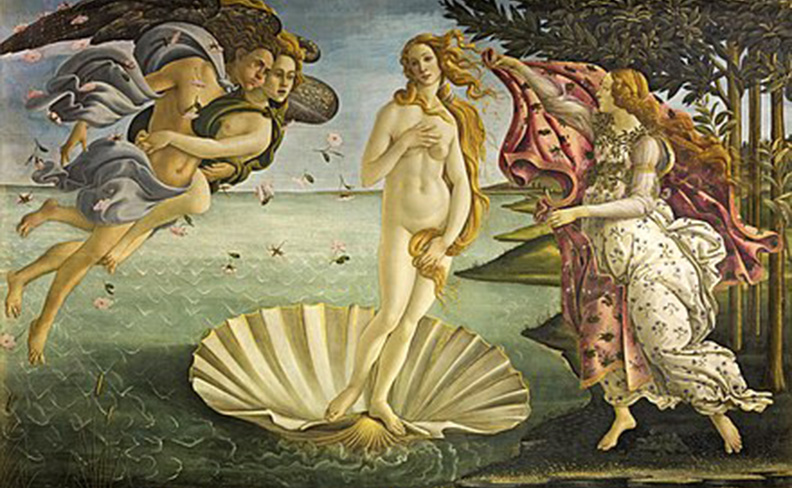

Visual Art

The Last Supper, da Vinci, 1495-1498
- 
School of Athens, Raphael, 1509-1511
- 
The Birth of Venus, Botticelli, 1485-1486

The Creation of Adam, Michelangelo, 1508-1512
The Italian Renaissance produced many of the greatest painters in art history. They were all influenced by the work of Giotto di Bondone in the late 13th century. One of the most influential artists who ever lived, Giotto changed the course of Western art by painting in a new realistic style. Florence became the center of early Renaissance art. The great Florentine masters of painting included Masaccio, Fra Angelico, Andrea Mantegna, Sandro Botticelli, and Paolo Uccello. The greatest artist of the 15th century was probably Leonardo da Vinci. His portrait Mona Lisa and his religious scene The Last Supper are among the most famous paintings in history. The later Renaissance was dominated by Raphael and Michelangelo. Raphael painted balanced, harmonious pictures that expressed a calm, noble way of life. Michelangelo achieved greatness both as a painter and sculptor. In Venice, a number of artists were painting richly colored works during the 16th century. The most famous Venetian masters included Giorgione, Titian, and Tintoretto. Italian painters dominated the Baroque period. Annibale Caracci and Caravaggio were the most important early Baroque painters. Caracci is also credited with the invention of caricature, a visual version of parody. In the 20th century, many Italians played leading roles in the development of modern art. Giorgio de Chirico gained fame for his haunting paintings of empty city squares. Amedeo Modigliani won renown with a series of portraits.